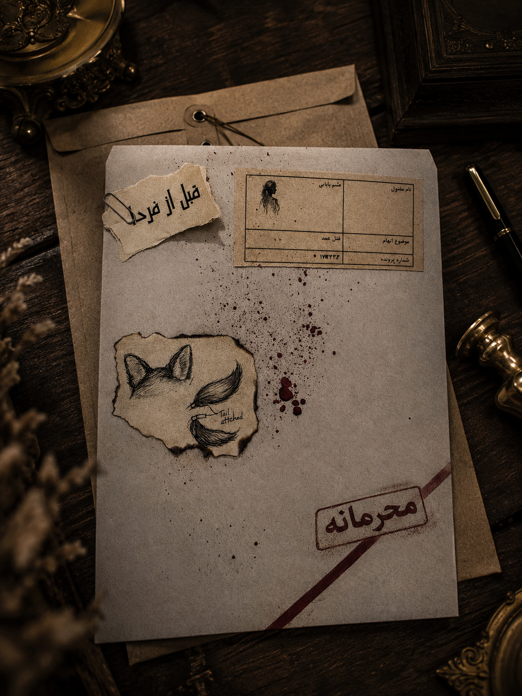
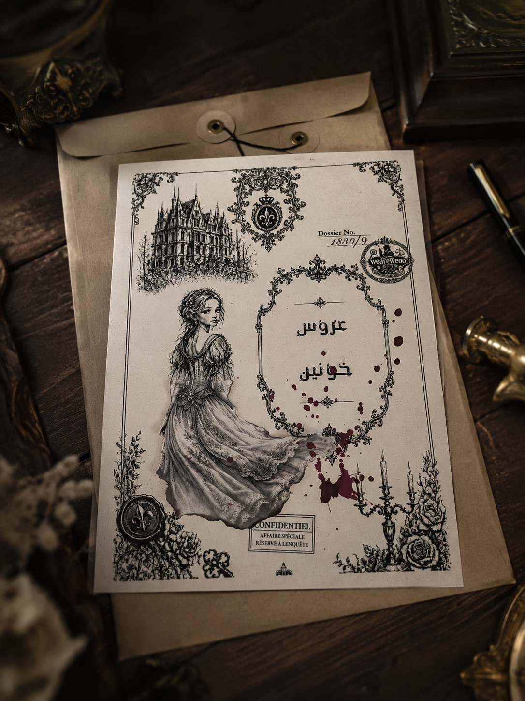
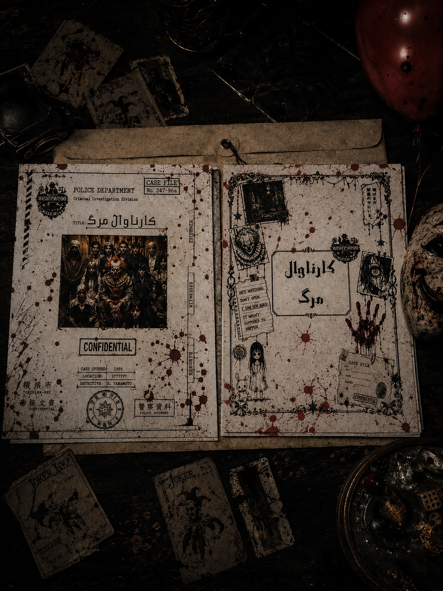

هر پروندهای که در این مرکز ثبت شده شامل سرنخها، مدارک و رازهای مخصوص خود است. فقط کسانی که جزئیات را میبینند میتوانند به حقیقت برسند.
بعضی پروندهها هرگز حل نشدهاند.
بعضی رازها نباید کشف میشدند.
حالا نوبت توست...

دختری وارد یک سایت مخفی و مرموز میشود. چند روز بعد بدون هیچ رد و نشانی ناپدید میشود و تنها یک پیام رمزآلود از او باقی میماند...
🔎 ورود به پرونده
در شب عروسی الا اندرسون، جشنی باشکوه به یک قتل مرموز تبدیل میشود. همه مظنوناند اما هیچکس چیزی ندیده است...
🔎 ورود به پرونده
اهالی روستا باور داشتند روح دلقکی که سالها قبل در همان سیرک خود را حلقآویز کرده بود، مسئول این کشتارها بوده است. با گذشت زمان....
📁 مشاهده وضعیت پرونده
همه خوابیدهاند... اما کابوس هنوز بیدار است.
این فقط یک پرونده نیست؛ آغاز یک کابوس است.